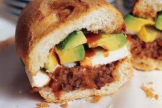

Torta

Description
A Torta is a Mexican sandwich made with Bolillo or Telera bread and
can be filled will a large assortment of meats and toppings. My favorite
bread to use is Bolillo and I like to use Chorizo as the meat. This recipe
will be to build my ideal Torta but there are countless ways to make one.
Like most sandwiches this is super easy to make but it may take a few extra
minutes if you have to cook the meat. I like serving my Tortas will a roasted
poblano pepper for some extra heat.
Ingredients
- Bolillo
- Refried beans- I like the canned spicy beans.
- Avocado
- Cheese- Cacique Queso Ranchero is the GOAT and always has a place on my Torta
- Poblano pepper
- Chorizo- 1lb
I have get on a soap box and reccomend that you buy your chorizo fresh from a local Mexican market as opposed
to buying packaged chorizo from a larger supermarket chain. The packaged chorizo is usually quick to burn, very greasy
and looks more like cooked red goo than fresh chorizo. I also don't reccomend vegan alternatives to chorizo for this.
Those products don't crumble at all and just become hard hotdog slice looking disappointments.
Steps
- We will start by cooking the chorizo. This step takes the longest and has some
downtime so it's best to start with it. If you bought fresh chorizo (the best kind)
then you'll notice a thin casing on it. Just peel it off and cook the chorizo in a
skillet. Be very careful on this step as pork must be cooked properly to avoid food poisoning
so touch as few surfaces as possible and wash your hands properly once you've got the meat
in the skillet. Cook over medium-high heat until finished, I like mine a bit crunchy so I leave
it on a bit longer than most. Just be careful, it smokes alot if it starts to burn and you
don't want your smoke alarm going off. Turn on your fan.
- While the chorizo is cooking you can get started with the beans. Since this recipe
is to build my ideal Torta we will be using canned spicy refried beans. Just open
the can and put them into a microwave safe bowl. To thin the beans out a bit I like to add
a little bit of water to them, maybe 1/4 cup. Mix them and then put them in the microwave for 2 minutes.
- Be sure you're stirring the chorizo as you take care of these other steps. While it's cooking
and the beans are in the microwave you can get your avocado ready. This is a simple step.
Carefully cut your avocado open, remove the core, and scoop out the amount you want or make slices.
- You can prepare the cheese two different ways. The image above has the cheese in slices but you can
also crumble the cheese if you want to spread it in the torta instead of having it as a slice.
- I like to toast my bolillo. Just cut it open and place it face down on a flat pan. Add some butter or
mayo to it beforehand if you like. At the same time you can add your poblano pepper to the flat top
so it can get nice and toasty. This will make it extra hot. Be ready for the flavor!
- That takes care of all the preparation. Depending on your pace, the chorizo will finish at different
times. If it's done before you have everything ready just turn off the heat and let it sit.
Add the refried beans to the bottom of the bolillo. I feel like they make a good base and with
the right amount of water you can spread them easily. Next you can add the chorizo with the cheese
on top of it. The last step is the avocado. If you scooped it out then it's easier to spread the
pieces onto the top of the bolillo. If you made nice neat slices then add them onto the rest of the ingredients.
- Once the actual torta is built all you have to do is get the poblano pepper on your plate and
get ready to set your mouth on fire, but in a good way. Enjoy!